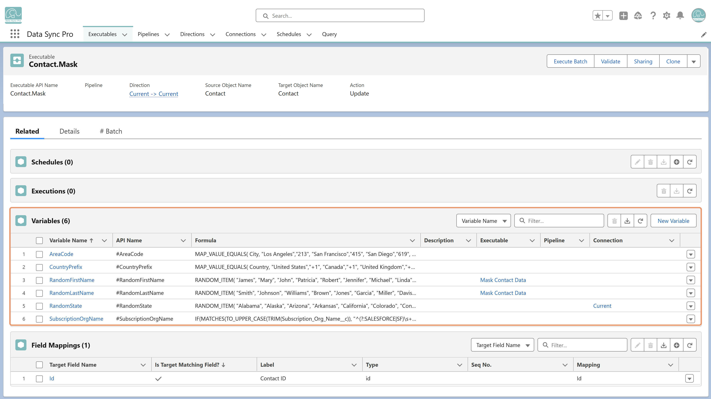

Create a Variable from an Executable's related list by giving it a name and assigning a formula. Variables let you simplify complex expressions and reuse the same logic across multiple mappings, filters, and rules.
Each Variable has a defined scope, which controls where it can be referenced:
